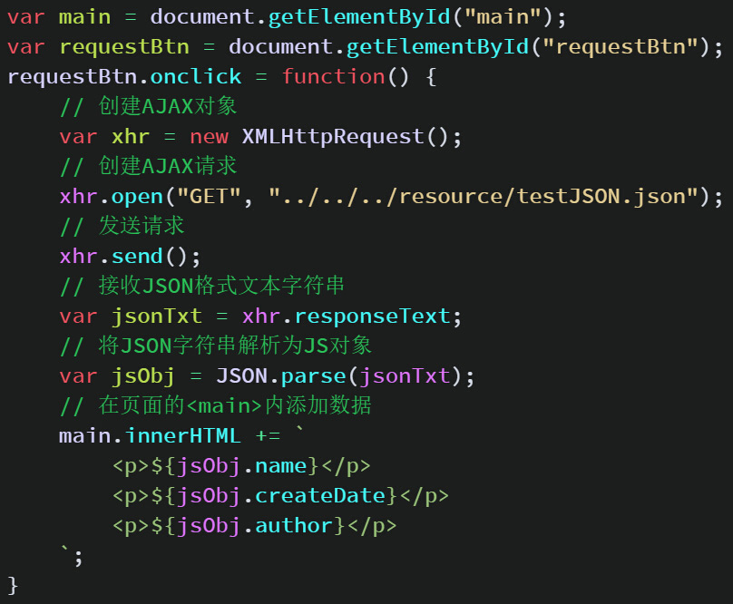
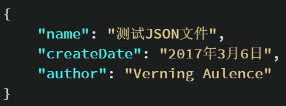
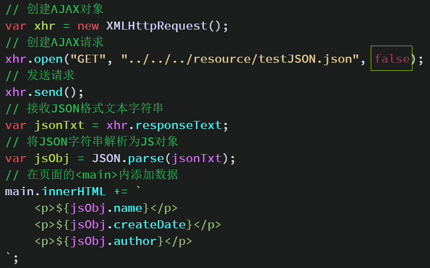
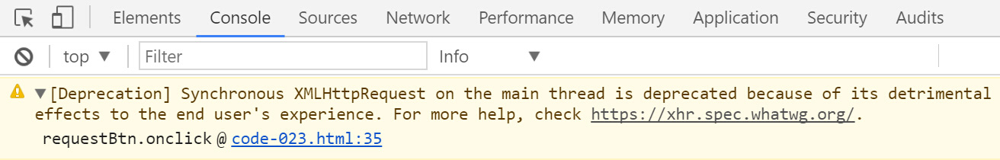
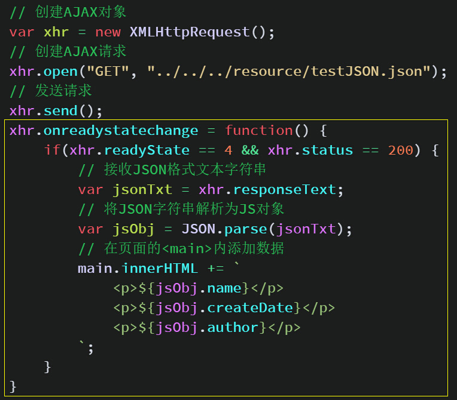
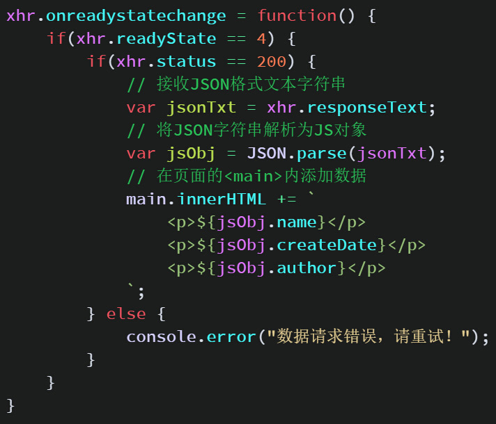
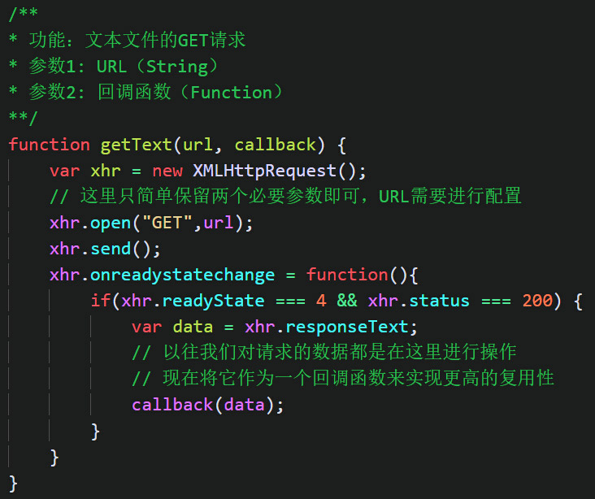
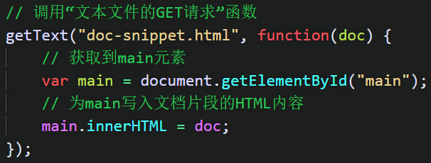

<!DOCTYPE html>
<html>
<head><meta name="generator" content="Hexo 3.8.0">
  <meta charset="utf-8">
  

  
  <title>原生ajax请求过程 | Gzqqqqq</title>
  <meta name="viewport" content="width=device-width, initial-scale=1, maximum-scale=1">
  
  
  
  <meta name="description" content="AJAX就是将获取到的内容以异步的方式被我们操作，通过AJAX可以获取HTML、XML、纯文本、JSON、图片、脚本等一切可以被浏览器识别的文件. 这个操作所获取的内容都是从服务器上来的，这里的服务器不一定是一个实实在在的服务器，但必须是一个具有HTTP协议的服务器环境，包括本地服务localhost，通过本地的资源文件管理器开启的文件是不支持AJAX的. 一次完整的AJAX请求大致需要经历以下步">
<meta name="keywords" content="javascript">
<meta property="og:type" content="article">
<meta property="og:title" content="原生ajax请求过程">
<meta property="og:url" content="http://Gzqqqqq.github.io/public/2019/04/01/原生ajax请求过程/index.html">
<meta property="og:site_name" content="Gzqqqqq">
<meta property="og:description" content="AJAX就是将获取到的内容以异步的方式被我们操作，通过AJAX可以获取HTML、XML、纯文本、JSON、图片、脚本等一切可以被浏览器识别的文件. 这个操作所获取的内容都是从服务器上来的，这里的服务器不一定是一个实实在在的服务器，但必须是一个具有HTTP协议的服务器环境，包括本地服务localhost，通过本地的资源文件管理器开启的文件是不支持AJAX的. 一次完整的AJAX请求大致需要经历以下步">
<meta property="og:locale" content="default">
<meta property="og:image" content="http://gzqqqqq.github.io/public/2019/04/01/原生ajax请求过程/ajax.png">
<meta property="og:image" content="http://gzqqqqq.github.io/public/2019/04/01/原生ajax请求过程/ajax1.png">
<meta property="og:image" content="http://gzqqqqq.github.io/public/2019/04/01/原生ajax请求过程/ajax2.png">
<meta property="og:image" content="http://gzqqqqq.github.io/public/2019/04/01/原生ajax请求过程/ajax3.png">
<meta property="og:image" content="http://gzqqqqq.github.io/public/2019/04/01/原生ajax请求过程/ajax4.png">
<meta property="og:image" content="http://gzqqqqq.github.io/public/2019/04/01/原生ajax请求过程/ajxa5.png">
<meta property="og:image" content="http://gzqqqqq.github.io/public/2019/04/01/原生ajax请求过程/ajax封装复用.png">
<meta property="og:image" content="http://gzqqqqq.github.io/public/2019/04/01/原生ajax请求过程/ajax复用.png">
<meta property="og:updated_time" content="2019-04-01T10:45:30.150Z">
<meta name="twitter:card" content="summary">
<meta name="twitter:title" content="原生ajax请求过程">
<meta name="twitter:description" content="AJAX就是将获取到的内容以异步的方式被我们操作，通过AJAX可以获取HTML、XML、纯文本、JSON、图片、脚本等一切可以被浏览器识别的文件. 这个操作所获取的内容都是从服务器上来的，这里的服务器不一定是一个实实在在的服务器，但必须是一个具有HTTP协议的服务器环境，包括本地服务localhost，通过本地的资源文件管理器开启的文件是不支持AJAX的. 一次完整的AJAX请求大致需要经历以下步">
<meta name="twitter:image" content="http://gzqqqqq.github.io/public/2019/04/01/原生ajax请求过程/ajax.png">
  
    <link rel="alternate" href="/atom.xml" title="Gzqqqqq" type="application/atom+xml">
  
  
    <link rel="icon" href="/images/default-avatar.jpeg">
  
  
    <link href="//fonts.googleapis.com/css?family=Source+Code+Pro" rel="stylesheet" type="text/css">
  
  <link rel="stylesheet" href="/css/style.css">
  <link rel="stylesheet" href="/css/highlight.css">
</head>
</html>
<body>
  <div id="fullpage" class="mobile-nav-right">
    
      <div id="wrapper" title="图片来自网络">
    
    
      <header id="header">
  <div id="nav-toggle" class="nav-toggle"></div>
  <div class="head-box global-width">
    <nav class="nav-box nav-right">
      
        <a class="nav-item" href="/" title>首页</a>
      
        <a class="nav-item" href="/archives" title>归档</a>
      
    </nav>
  </div>
</header>
      <div id="middlecontent" title class="global-width sidebar-right">
        <section id="main"><article id="post-原生ajax请求过程" class="article global-container article-type-post" itemscope itemprop="blogPost">
  
    <header class="article-header">
      
  
    <h1 class="article-title" itemprop="name">
      原生ajax请求过程
    </h1>
  

    </header>
  
  <div class="article-meta">
    <a href="/2019/04/01/原生ajax请求过程/" class="article-date">
  <time datetime="2019-04-01T09:07:21.000Z" itemprop="datePublished">2019-04-01</time>
</a>
    
    
  <ul class="article-tag-list"><li class="article-tag-list-item"><a class="article-tag-list-link" href="/tags/javascript/">javascript</a></li></ul>

  </div>
  
    <span id="busuanzi_container_page_pv">
      本文总阅读量<span id="busuanzi_value_page_pv"></span>次
    </span>
  

  <div class="article-inner">
    
    <div class="article-content article-content-doorframe" itemprop="articleBody">
      
       
  	
  	  <p>AJAX就是将获取到的内容以异步的方式被我们操作，通过AJAX可以获取HTML、XML、纯文本、JSON、图片、脚本等一切可以被浏览器识别的文件.</p>
<p>这个操作所获取的内容都是从服务器上来的，这里的服务器不一定是一个实实在在的服务器，但必须是一个具有HTTP协议的服务器环境，包括本地服务localhost，<strong>通过本地的资源文件管理器开启的文件是不支持AJAX的</strong>.</p>
<h4 id="一次完整的AJAX请求大致需要经历以下步骤："><a href="#一次完整的AJAX请求大致需要经历以下步骤：" class="headerlink" title="一次完整的AJAX请求大致需要经历以下步骤："></a>一次完整的AJAX请求大致需要经历以下步骤：</h4><ul>
<li><p>创建AJAX对象</p>
</li>
<li><p>创建AJAX请求</p>
</li>
<li><p>发送AJAX请求</p>
</li>
<li><p>接收所请求的数据并进行处理(配置在异步操作中是一个回调函数)</p>
</li>
</ul>
<p>由于第四步配置在异步操作中是一个回调函数，所以很多时候会调整到第二步去写，而把“创建AJAX请求”和“发送AJAX请求”写在后面。</p>
<hr>
<h3 id="XMLHttpRequest对象"><a href="#XMLHttpRequest对象" class="headerlink" title="XMLHttpRequest对象"></a>XMLHttpRequest对象</h3><p><strong>XMLHttpRequest对象</strong>是实现AJAX的最基本对象。实质上也是一个JavaScript内置的构造函数</p>
<p>在IE5、IE6上使用的是“<strong>ActiveXObject(“Microsoft.XMLHTTP”)</strong>”</p>
<p>要进行AJAX的相关操作通常我们都是将XMLHttpRequest这个构造函数实例化为一个对象，然后再对我们实例化出的对象进行操作</p>
<div class="highlight-box" autocomplete="off" autocorrect="off" autocapitalize="off" spellcheck="false" contenteditable="true" data-rel="BASH"><figure class="iseeu highlight /bash"><table><tr><td class="gutter"><pre><span class="line">1</span><br></pre></td><td class="code"><pre><span class="line">var xhr = XMLHttpRequest;     //实例化异步请求对象</span><br></pre></td></tr></table></figure></div>
<hr>
<h3 id="创建请求open"><a href="#创建请求open" class="headerlink" title="创建请求open()"></a>创建请求open()</h3><p>按照我们一次AJAX请求的正常步骤，当一个XHR对象被实例化后，就应该要创建一个请求了；</p>
<p>创建请求使用的方法为<strong>open()</strong>，该方法共有5个参数。</p>
<p>如下：</p>
<ol>
<li><p><strong>method</strong>：必选，字符串。表示请求的方式，常用的有：”GET”和”POST”，另外还有不常用的”PUT”和”DELETE”。</p>
</li>
<li><p><strong>url</strong>：必须，字符串。表示请求的相对路径或绝对路径的URL。</p>
</li>
<li><p>async：可选，布尔值。true（默认）表示“异步请求”，false表示“同步请求”。</p>
</li>
<li><p>user：可选，字符串。默认为空字符串，表示用于认证的用户名。</p>
</li>
<li><p>password：可选，字符串。默认为空字符串，表示用于认证的密码。</p>
</li>
</ol>
<div class="highlight-box" autocomplete="off" autocorrect="off" autocapitalize="off" spellcheck="false" contenteditable="true" data-rel="BASH"><figure class="iseeu highlight /bash"><table><tr><td class="gutter"><pre><span class="line">1</span><br><span class="line">2</span><br><span class="line">3</span><br><span class="line">4</span><br><span class="line">5</span><br><span class="line">6</span><br><span class="line">7</span><br></pre></td><td class="code"><pre><span class="line">var xhr = XMLHttpRequest;</span><br><span class="line"></span><br><span class="line">xhr.open(<span class="string">"GET"</span>,<span class="string">"page/test.html."</span>,<span class="literal">true</span>);</span><br><span class="line">xhr.open(<span class="string">"GET"</span>,<span class="string">"http://aulence.com/resource/testJSON.json"</span>,<span class="literal">true</span>);</span><br><span class="line">xhr.open(<span class="string">"GET"</span>,<span class="string">"http://www.baidu.com"</span>,<span class="literal">true</span>);</span><br><span class="line">xhr.open(<span class="string">"POST"</span>,<span class="string">"page/test.html."</span>,<span class="literal">true</span>);</span><br><span class="line">xhr.open(<span class="string">"POST"</span>,<span class="string">"http://aulence.com/resource/testJSON.json"</span>,<span class="literal">true</span>);</span><br></pre></td></tr></table></figure></div>
<hr>
<h3 id="发送请求send"><a href="#发送请求send" class="headerlink" title="发送请求send()"></a>发送请求send()</h3><p>该方法就是将之前创建的请求发送给服务器；</p>
<p>如果使用的是”GET”方式不需要参数；</p>
<p>如果使用的是”POST”的方式，则通常需要在这个方法内写出参数；</p>
<p>这个参数可以是字符串（或被转换为字符串的字符），也可以是一个变量。</p>
<div class="highlight-box" autocomplete="off" autocorrect="off" autocapitalize="off" spellcheck="false" contenteditable="true" data-rel="BASH"><figure class="iseeu highlight /bash"><table><tr><td class="gutter"><pre><span class="line">1</span><br><span class="line">2</span><br><span class="line">3</span><br><span class="line">4</span><br><span class="line">5</span><br><span class="line">6</span><br><span class="line">7</span><br><span class="line">8</span><br><span class="line">9</span><br><span class="line">10</span><br><span class="line">11</span><br></pre></td><td class="code"><pre><span class="line">//创建ajax对象</span><br><span class="line">var xhr = XMLHttpRequest;</span><br><span class="line"></span><br><span class="line">//创建请求（GET）</span><br><span class="line">xhr.open(<span class="string">"GET"</span>,<span class="string">"page/test.html."</span>,<span class="literal">true</span>);</span><br><span class="line">xhr.send();   //发送请求</span><br><span class="line"></span><br><span class="line">//创建请求（POST）</span><br><span class="line">var data = <span class="string">"id="</span> + encodeURIComponent(id)</span><br><span class="line">xhr.open(<span class="string">"POST"</span>,<span class="string">"http://aulence.com/resource/testJSON.json"</span>,<span class="literal">true</span>);</span><br><span class="line">xhr.send(data);</span><br></pre></td></tr></table></figure></div>
<hr>
<h3 id="请求状态onreadystatechange"><a href="#请求状态onreadystatechange" class="headerlink" title="请求状态onreadystatechange"></a>请求状态onreadystatechange</h3><p>AJAX的请求是需要时间的（就算在本地服务器环境）；</p>
<p>而这个时间很多时候是取决于当前的网络状况；</p>
<p>也就是说，一个请求正在进行，我们是没有办法立即对假设已经获取到的数据进行操作。</p>
<p>如果直接获取正在请求的数据，页面不会加载出数据，并且控制台会报错。</p>
<p></p>
<p></p>
<p>这是因为现在数据还没有请求完成，就去对一个空字符串</p>
<p>（这个时候“xhr.responseText”没有请求到数据，还是一个空的字符串）</p>
<p>进行了“JSON.parse()”方法的操作，所以报错。</p>
<p>onreadystatechange()事件可以为这个事件添加监听函数来检测请求的各个状态。</p>
<p>有两个方法可以解决这个问题。</p>
<p><strong>第一种</strong>，将穿件的请求改<strong>为同步的方式</strong></p>
<p></p>
<p>这样数据就会被正常的请求过来，并被我们用DOM操作将数据用模版字符串的方式添加进了页面内。</p>
<p>但是这样做却存在一个问题。</p>
<p></p>
<p>可以看到浏览器提出了一个“[Deprecation]（不赞成）”的意见。</p>
<p>也就是说这种做法是不被推荐的；</p>
<p>而且这样做，显然也失去了AJAX所具有的“异步”特点和这一点带来的优势。</p>
<p><strong>第二种</strong>，使用AJAX对象内提供的<strong>onreadystatechange()事件</strong>，为这个事件添加监听函数来检测请求的各个状态。</p>
<p></p>
<p>在这次的代码改动中首先是为原来获取到的数据和对数据操作的部分扩上了一层onreadystatechange的事件；</p>
<p>在这个事件内部还多了两个属性：“<strong>readyState</strong>”和“<strong>status</strong>”；</p>
<p>这两个属性正是这个事情成功执行获取请求数据和对数据进行操作的关键。</p>
<p>“<strong>readyState</strong>”属性的状态值在变化，该属性共有5个值；</p>
<p>其中值为“2、3、4”的时候会<strong>触发onreadystatechange事件</strong></p>
<p>这5个值表示的状态分别如下：</p>
<ul>
<li><p>0，对应常量”UNSENT”，表示XMLHttpRequest实例已经生成，但是open()方法还没有被调用</p>
</li>
<li><p>1，对应常量”OPENED”，表示send()方法还没有被调用，仍然可以使用setRequestHeader()，设定HTTP请求的头信息</p>
</li>
<li><p>2，对应常量”HEADERS_RECEIVED”，表示send()方法已经执行，并且头信息和状态码已经收到</p>
</li>
</ul>
<ul>
<li><p>3，对应常量”LOADING”，表示正在接收服务器传来的body部分的数据，如果responseType属性是text或者空字符串，responseText就会包含已经收到的部分信息</p>
</li>
<li><p>4，对应常量”DONE”，表示服务器数据已经完全接收，或者本次接收已经失败了</p>
</li>
</ul>
<p><strong>status</strong>属性反应的是请求的结果的状态值，它有以下可能的值：</p>
<ul>
<li><p>200, 对应常量”OK”，访问正常</p>
</li>
<li><p>301, 对应常量”Moved Permanently”，永久移动</p>
</li>
<li><p>302, 对应常量”Move temporarily”，暂时移动</p>
</li>
<li><p>304, 对应常量”Not Modified”，未修改</p>
</li>
<li><p>307, 对应常量”Temporary Redirect”，暂时重定向</p>
</li>
<li><p>401, 对应常量”Unauthorized”，未授权</p>
</li>
<li><p>403, 对应常量”Forbidden”，禁止访问</p>
</li>
<li><p>404, 对应常量”Not Found”，未发现指定网址</p>
</li>
<li><p>408, 对应常量”Out Time”，请求服务器超时</p>
</li>
<li><p>500, 对应常量”Internal Server Error”，服务器发生错误</p>
</li>
</ul>
<p><strong>注意</strong>，readyState == 4时，并不代表请求数据成功，该数据就是我们想要的，它只表示数据请求完成。</p>
<p>所以，一般onreadystatechange事件写法如下：</p>
<p></p>
<h4 id="GET和POST请求的对比"><a href="#GET和POST请求的对比" class="headerlink" title="GET和POST请求的对比"></a>GET和POST请求的对比</h4><table>
<thead>
<tr>
<th>名称</th>
<th>比较</th>
</tr>
</thead>
<tbody>
<tr>
<td>性能</td>
<td>GET的性能比POST更好</td>
</tr>
<tr>
<td>缓存</td>
<td>GET能够缓存文件，而POST每次都必须从服务器更新数据。</td>
</tr>
<tr>
<td>数据量</td>
<td>GET发送的数据参数有大小限制（2048个字节），而POST没有这个限制，可以利用它来发送大量数据参数。</td>
</tr>
<tr>
<td>安全性</td>
<td>GET发送的参数是明文的，而POST发送的参数放在send方法内被加密，更加安全。</td>
</tr>
<tr>
<td>是否加头文件</td>
<td>POST发送请求时设置请求头文件xhr.setRequestHeader(“content-type”,”application/xxx”)</td>
</tr>
</tbody>
</table>
<h4 id="ajax的封装复用："><a href="#ajax的封装复用：" class="headerlink" title="ajax的封装复用："></a>ajax的封装复用：</h4><p></p>
<p></p>

  	
  
</div>
    
      <footer class="article-footer">
        完
      </footer>
    
  </div>
  
    
<nav id="article-nav">
  <div class="article-nav-block">
    
      <a href="/2019/04/01/Cookie/" id="article-nav-newer" class="article-nav-link-wrap">
        <strong class="article-nav-caption"></strong>
        <div class="article-nav-title">
          
            Cookie
          
        </div>
      </a>
    
  </div>
  <div class="article-nav-block">
    
      <a href="/2019/04/01/详解call、apply、bind/" id="article-nav-older" class="article-nav-link-wrap">
        <div class="article-nav-title">详解call、apply、bind</div>
        <strong class="article-nav-caption"></strong>
      </a>
    
  </div>
</nav>

    
<div id="gitmentContainer"></div>
<link rel="stylesheet" href="https://imsun.github.io/gitment/style/default.css">
<script src="https://imsun.github.io/gitment/dist/gitment.browser.js"></script>
<script>
var gitment = new Gitment({
  owner: '',
  repo: '',
  oauth: {
    client_id: '',
    client_secret: '',
  },
})
gitment.render('gitmentContainer')
</script>

  
  
</article>
</section>
        <aside id="sidebar">
  
    <div class="widget-box">
  <div class="avatar-box">
    
    <h3 class="avatar-name">
      
        椿去湫来
      
    </h3>
    <p class="avatar-slogan">
      如果有来生，我要做一棵树，站成永恒，没有悲欢的姿势。
    </p>
  </div>
</div>


  
    

  
    
  <div class="widget-box">
    <h3 class="widget-title">Tags</h3>
    <div class="widget">
      <ul class="tag-list"><li class="tag-list-item"><a class="tag-list-link" href="/tags/Cookie/">Cookie</a></li><li class="tag-list-item"><a class="tag-list-link" href="/tags/DOM/">DOM</a></li><li class="tag-list-item"><a class="tag-list-link" href="/tags/Session/">Session</a></li><li class="tag-list-item"><a class="tag-list-link" href="/tags/css/">css</a></li><li class="tag-list-item"><a class="tag-list-link" href="/tags/git/">git</a></li><li class="tag-list-item"><a class="tag-list-link" href="/tags/javascript/">javascript</a></li><li class="tag-list-item"><a class="tag-list-link" href="/tags/node/">node</a></li><li class="tag-list-item"><a class="tag-list-link" href="/tags/vue/">vue</a></li><li class="tag-list-item"><a class="tag-list-link" href="/tags/存储机制/">存储机制</a></li><li class="tag-list-item"><a class="tag-list-link" href="/tags/样例/">样例</a></li><li class="tag-list-item"><a class="tag-list-link" href="/tags/正则表达式/">正则表达式</a></li><li class="tag-list-item"><a class="tag-list-link" href="/tags/浏览器缓存/">浏览器缓存</a></li><li class="tag-list-item"><a class="tag-list-link" href="/tags/私人/">私人</a></li></ul>
    </div>
  </div>


  
    
  <div class="widget-box">
    <h3 class="widget-title">Tag Cloud</h3>
    <div class="widget tagcloud">
      <a href="/tags/Cookie/" style="font-size: 10px;">Cookie</a> <a href="/tags/DOM/" style="font-size: 10px;">DOM</a> <a href="/tags/Session/" style="font-size: 10px;">Session</a> <a href="/tags/css/" style="font-size: 15px;">css</a> <a href="/tags/git/" style="font-size: 10px;">git</a> <a href="/tags/javascript/" style="font-size: 20px;">javascript</a> <a href="/tags/node/" style="font-size: 10px;">node</a> <a href="/tags/vue/" style="font-size: 10px;">vue</a> <a href="/tags/存储机制/" style="font-size: 10px;">存储机制</a> <a href="/tags/样例/" style="font-size: 10px;">样例</a> <a href="/tags/正则表达式/" style="font-size: 10px;">正则表达式</a> <a href="/tags/浏览器缓存/" style="font-size: 10px;">浏览器缓存</a> <a href="/tags/私人/" style="font-size: 10px;">私人</a>
    </div>
  </div>

  
    
  <div class="widget-box">
    <h3 class="widget-title">Archives</h3>
    <div class="widget">
      <ul class="archive-list"><li class="archive-list-item"><a class="archive-list-link" href="/archives/2019/04/">April 2019</a></li><li class="archive-list-item"><a class="archive-list-link" href="/archives/2019/03/">March 2019</a></li></ul>
    </div>
  </div>

  
    
  <div class="widget-box">
    <h3 class="widget-title">Recent Posts</h3>
    <div class="widget">
      <ul>
        
          <li>
            <a href="/2019/04/04/浏览器的缓存机制/">浏览器的缓存机制</a>
          </li>
        
          <li>
            <a href="/2019/04/02/Web存储机制/">Web存储机制</a>
          </li>
        
          <li>
            <a href="/2019/04/01/Session/">Session</a>
          </li>
        
          <li>
            <a href="/2019/04/01/Cookie/">Cookie</a>
          </li>
        
          <li>
            <a href="/2019/04/01/原生ajax请求过程/">原生ajax请求过程</a>
          </li>
        
      </ul>
    </div>
  </div>

  
</aside>
      </div>
      <footer id="footer">
  <div class="foot-box global-width">
    &copy; 2019 Gzqqqqq &nbsp;&nbsp;
    Powered by <a href="http://hexo.io/" target="_blank">Hexo</a>
    &nbsp;|&nbsp;主题 <a href="https://github.com/yiluyanxia/hexo-theme-antiquity">antiquity</a>
    <br>
    <script async src="//busuanzi.ibruce.info/busuanzi/2.3/busuanzi.pure.mini.js"></script>
    <span id="busuanzi_container_site_pv">阁下是第<span id="busuanzi_value_site_pv"></span>个访客</span>
  </div>
</footer>
      <script src="//ajax.googleapis.com/ajax/libs/jquery/2.0.3/jquery.min.js"></script>

<script src="/js/jquery-2.0.3.min.js"></script>

  <link rel="stylesheet" href="/fancybox/jquery.fancybox.css">
  <script src="/fancybox/jquery.fancybox.pack.js"></script>


<script src="/js/script.js"></script>


    </div>
    <nav id="mobile-nav" class="mobile-nav-box">
  <div class="mobile-nav-img mobile-nav-top"></div>
  
    <a href="/" class="mobile-nav-link">首页</a>
  
    <a href="/archives" class="mobile-nav-link">归档</a>
  
  <div class="mobile-nav-img  mobile-nav-bottom"></div>
</nav>    
  </div>
</body>
</html>